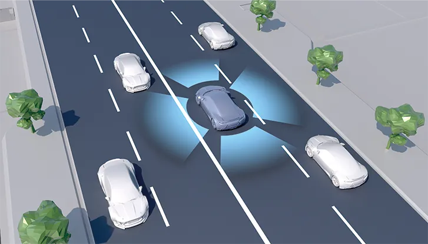

全景環視系統
產品概覽
AVM 透過多路攝影機採集車身周圍畫面，構建連續、直觀的全景環視視野，協助駕駛者在低速行駛與泊車過程中識別車輛周邊障礙物和視野盲區。

Capabilities
融合前、後、左、右多路攝影機畫面，形成整車周邊全景視野。
圍繞低速會車、狹窄道路和泊車場景提供多種環視觀察方式。
面向量產車型進行硬體、演算法與顯示方案適配，支援按專案配置。
產品詳情
VT-AVM 利用自研算法對每路攝像頭的畸變、色彩和亮度進行校正，並將各路畫面拼接為 360° 全景視圖，包含可觀察車身遮擋地面的透明底盤視圖。
系統支持 DVR 等功能。
對每路攝像頭的畸變、色彩和亮度進行校正，並拼接為 360° 全景視圖。
形成車輛周邊的 360° 全景視圖。
提供可觀察車身遮擋地面的透明底盤視圖。
支持 DVR 等功能。
Applications
Related Products
產品功能與配置可根據車型及專案需求定製，具體方案以專案評估為準。